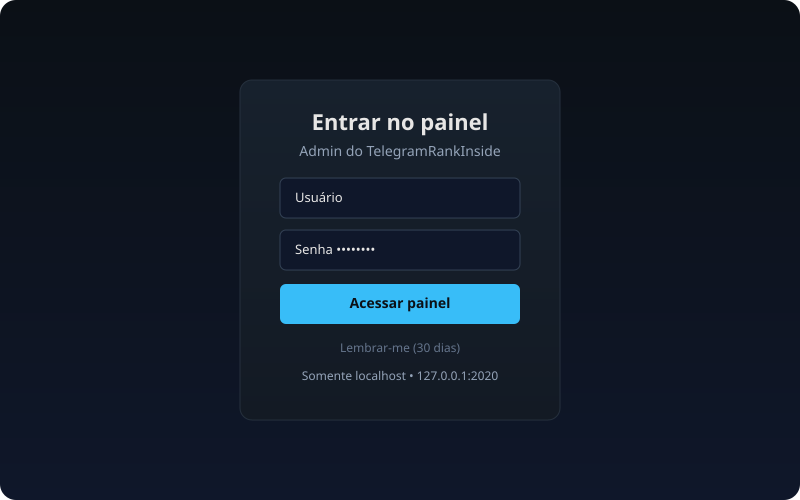
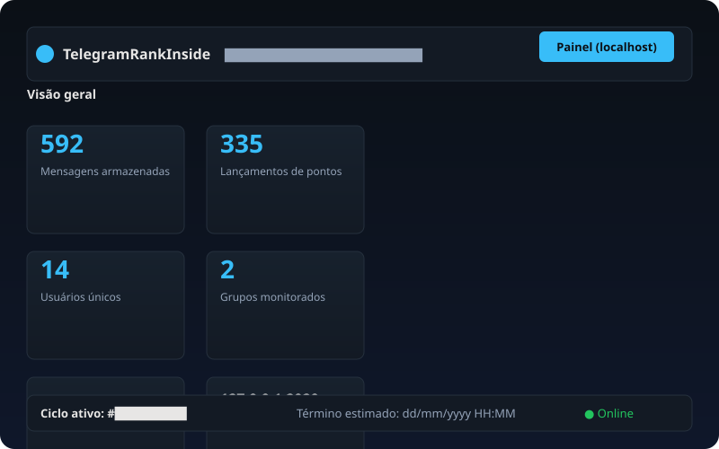
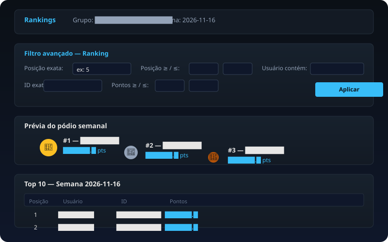
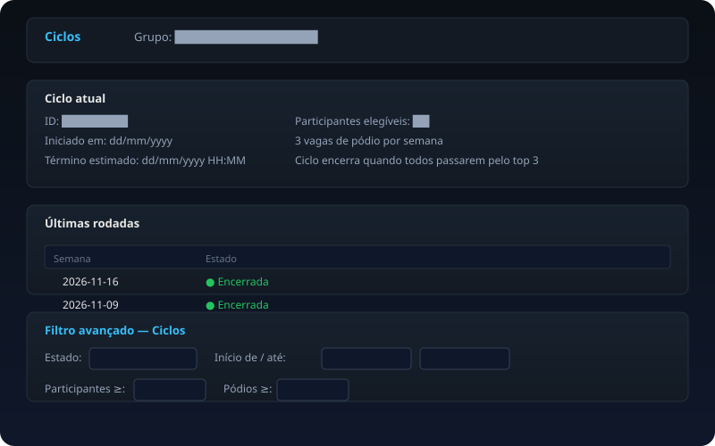
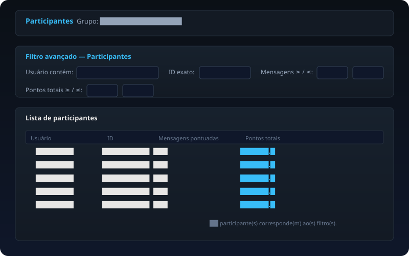
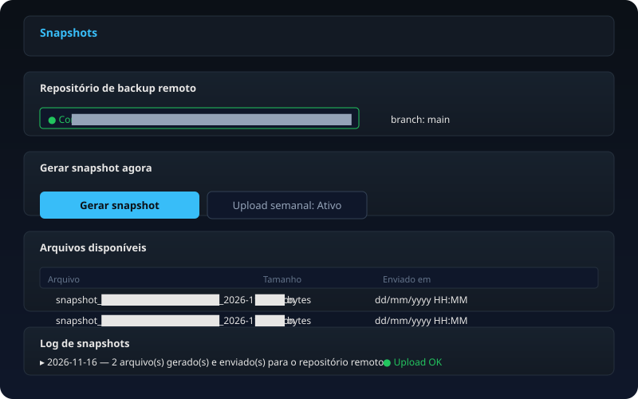
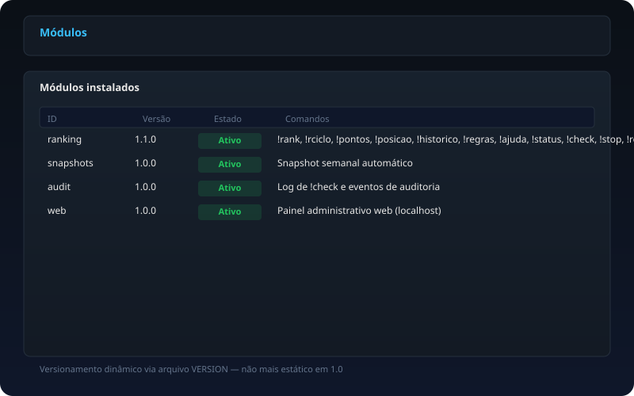

Interface web do painel
Prints representativos da interface (dados sensíveis desidentificados com ████████).








Bot completo para supergrupos com sistema de pontos, pódio semanal, ciclos de rotação, painel web administrativo, filtros avançados, auditoria de eventos e snapshot semanal com backup automático em repositório privado.
O TelegramRankInside é um bot para supergrupos do Telegram que registra mensagens, lança pontos e gera um ranking semanal de participação. Ideal para comunidades que querem engajar membros com um minigame de ranqueamento.
Escrito em Python puro (stdlib only), sem dependências externas. Persistência em SQLite com WAL mode. Painel administrativo web rodando apenas em localhost, com autenticação por sessão e cookie persistente opcional.
O painel web é exposto somente em 127.0.0.1. Tokens, senhas e credenciais nunca são commitados — ficam em config/config.env (gitignorado). Dados de usuários usam user_id como identidade, nunca @username exposto publicamente.
Projeto open source. Código disponível no GitHub sob a organização Amielle-Inside. Repositório principal público; backups de snapshot em repositório privado dedicado.
Top 10 de participantes por semana com pontos acumulados, pódio rotativo (🥇 🥈 🥉) e filtro por posição, usuário, ID ou pontos.
Ciclos com início e término estimado, participantes elegíveis e pódios por ciclo. O ciclo encerra quando todos passarem pelo top 3.
Lista de todos os participantes com mensagens pontuadas, pontos totais, nome de usuário e ID. Filtros avançados por todos os campos.
Log de todas as execuções de !check nos grupos: se foi auditado, o que foi auditado, quem ganhou ou perdeu pontos, com parâmetros legíveis.
Geração automática de snapshots JSON para todos os grupos, com upload para repositório privado dedicado e status de upload no painel.
Cada módulo tem versão própria (não mais estático em 1.0), lida dinamicamente de um arquivo VERSION na raiz do projeto.
Painel web com autenticação por sessão e opção "Lembrar-me" (cookie de 30 dias). Acesso restrito a localhost.
Seletor de grupos integrado ao menu de navegação, aparecendo em todas as páginas do painel com layout consistente.
Todos os cards, filtros e tabelas centralizados com largura máxima consistente e navegação rápida entre abas.
Prints representativos da interface (dados sensíveis desidentificados com ████████).







Acesse http://127.0.0.1:2020/painel/ (somente localhost). Login com usuário e senha definidos em config/config.env.
!rank — ranking semanal!rciclo — ciclo atual!pontos — meus pontos!regras — como funciona!check — auditoria (admin)Gere snapshots semanais no painel. Eles são enviados automaticamente para um repositório privado dedicado no GitHub.